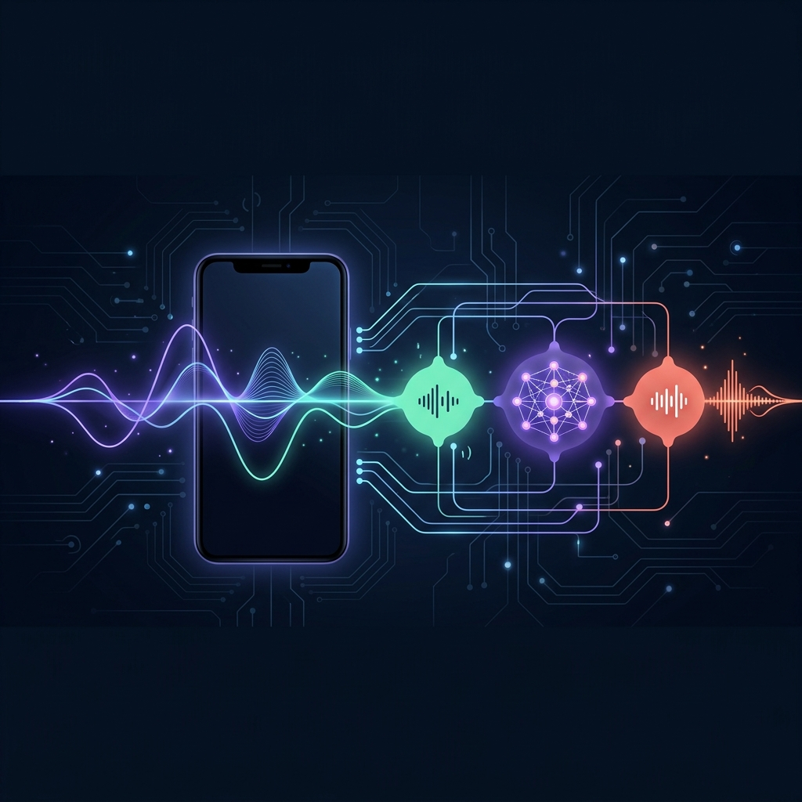

Introduction
Building a voice agent for mental health isn't just about transcription and synthesis. It's about **reasoning, empathy, and continuity**. Noa is designed to be more than a voice; she is a therapist-in-your-pocket, powered by a custom-tuned LLM and a high-performance voice layer.
In this story, we break down our hybrid architecture, analyze the latency bottlenecks, and look at how we've optimized our infrastructure to stretch $20,000 of GCP credits into a year of runway for 10,000 users.
The Architecture: Brain vs. Voice
We chose a **Hybrid Orchestration** model. While all-in-one solutions exist, keeping Noa's "brain" separate from the voice "ears and mouth" allows us to maintain 100% ownership of the therapeutic logic.
Why This approach?
By using Google Cloud Speech APIs for the voice layer, we leverage world-class infrastructure while keeping our core IP—**the Noa Model**—completely isolated. Google never see our model weights or therapeutic prompts.
| Feature | Recommended (Hybrid) | Gemini Live (All-in-one) |
|---|---|---|
| Logic Control | Full (You own Noa's brain) | Restricted (Google controls model) |
| Latency | ~830ms (Streaming) | ~300ms (Direct) |
| Cost/Call | $0.52 | $0.21 |
| Privacy | High (Logic isolated) | Moderate (All-in-one API) |
Latency: The 300ms Benchmark
In conversational AI, 1 second is an eternity. Human conversation typically has a gap of 200-400ms. **Rumik AI's "Silk" agent** recently demonstrated that bringing latency down to **300ms** creates a fundamentally different experience—one that feels "alive."
Our current architecture hits **~830ms**. Here is the breakdown of where every millisecond goes:
The Silk Frontier: Rumik AI’s Research
While Noa focuses on deep therapeutic reasoning, researchers at **Rumik AI** (an Indian AI startup) are pushing the boundaries of raw vocal expression with their **Silk** model. Their goal is to eliminate the "robotic" feel of AI by making the voice layer itself emotionally intelligent.
Silk Model (Ira)
- Target Latency: 300ms
- Architecture: Transformer-Backbone TTS
- Output: Discrete Audio Codes
Key Innovations
- End-to-end emotional cues (laughing, whispering)
- Native code-switching (Multilingual)
- Zero-shot voice cloning
Rumik's approach treats speech generation like next-token prediction. Instead of traditional TTS pipelines, Silk predicts discrete audio tokens directly, allowing for human-like pacing, pauses, and affective dialog. This is the gold standard we aim to integrate into Noa’s voice layer.
Economics: The $20,000 Runway
Running a voice agent at scale is expensive. Between STT, TTS, and Cloud Run orchestration, a 5-minute therapy session costs roughly **$0.52**. However, with the $20,000 GCP credits from our startup program, we have significant runway.
Runway Projections
Our "Sweet Spot" is 10,000 users calling Noa once per week. This gives us 12 months to validate product-market fit before needing a Series A.
| Users | Frequency | Monthly Cost | Runway |
|---|---|---|---|
| 2,000 | 1x / week | $4,510 | 53 Months |
| 5,000 | 1x / week | $10,750 | 22 Months |
| 10,000 | 1x / week | $21,150 | 12 Months |
| 10,000 | 3x / week | $62,750 | 4 Months |
Safety & Compliance
In mental health, safety is not a feature—it's a foundation. Our architecture includes three critical safety layers:
- Crisis Detection Layer: Real-time intent detection that triggers human intervention if self-harm or ideation is detected.
- Encrypted Transcripts: All audio and text logs are encrypted at rest with HIPAA-compliant keys in Google Cloud Logging.
- Session Memory: Firestore stores user mood history and context, allowing Noa to remember past conversations and provide continuity.
